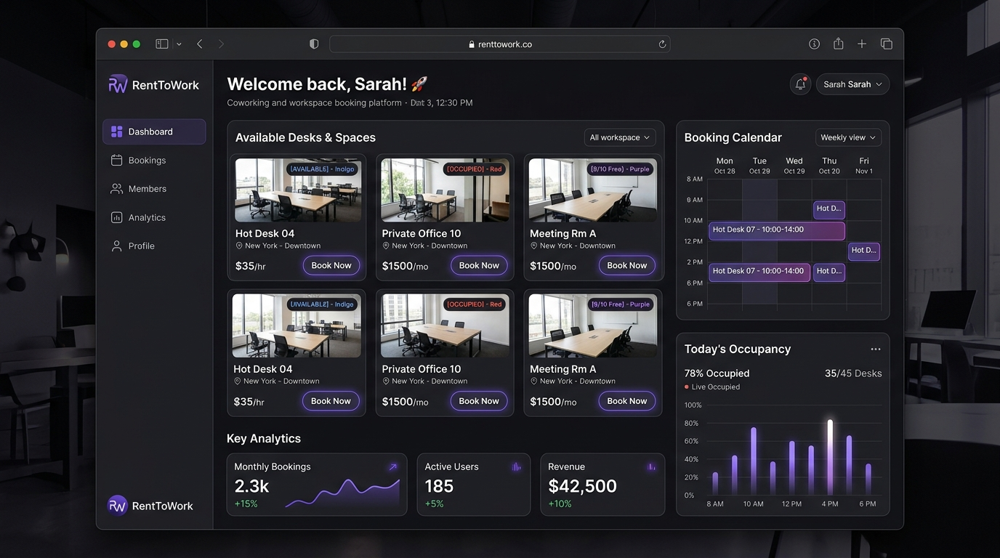
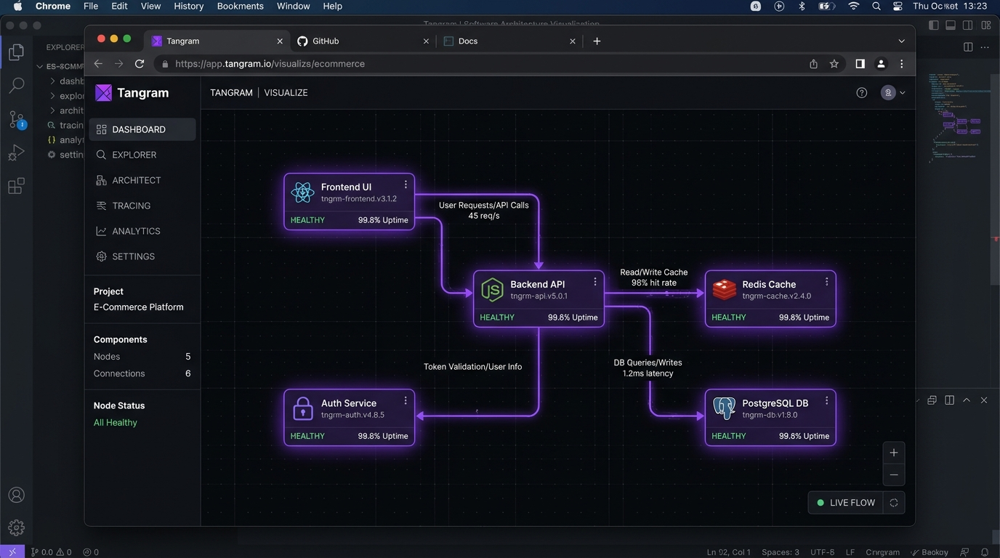
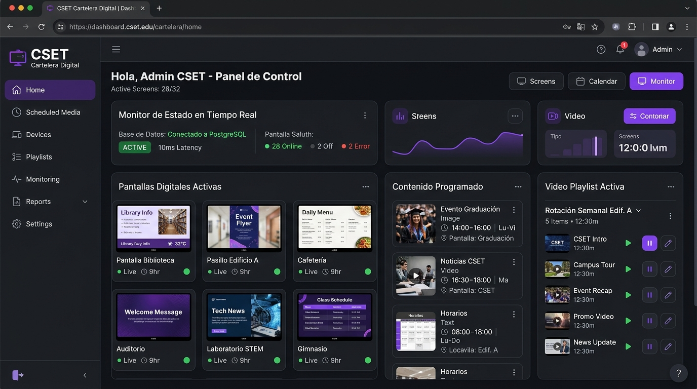

Desarrollo desde cero de una plataforma web Full-Stack con Next.js (App Router), React, TypeScript y Tailwind CSS, permitiendo la reserva y gestión de espacios de trabajo en tiempo real con persistencia en base de datos.
👋 ¡Hola! Soy
Diego Alexander Muñoz Guzmán
• Desarrollador Web
Soy Desarrollador Web Junior_
Especializado en Next.js (App Router), React & TypeScript con bases en PostgreSQL.
Desarrollador apasionado por crear aplicaciones web modernas, intuitivas y eficientes. Con experiencia en la construcción de soluciones Full-Stack desde cero, aseguramiento de calidad (QA) y optimización continua de sistemas en producción.
Experiencia & Trayectoria
Roles clave, proyectos integrales y evolución técnica.
Participé en la evolución técnica y estabilización de la plataforma institucional Smart CSET, resolviendo incidencias de código y asegurando la continuidad operativa y rendimiento de los módulos críticos en producción.
Diseñé y ejecuté planes estructurados y cronogramas de pruebas unitarias y de integración, validando rigurosamente el correcto funcionamiento de flujos clave de negocio antes de los despliegues oficiales.
Diseño de interfaces modernas con Tailwind CSS y componentes modulares en React. Enfoque riguroso en rendimiento web, diseño responsivo para todo tipo de pantallas y accesibilidad para los usuarios.
Buscando aportar valor en equipos multidisciplinarios creando soluciones accesibles, escalables y centradas en el usuario.
Next.js (App Router)
React
TypeScript
Tailwind CSS
PostgreSQL
JavaScript (ES6+)
Git & GitHub
PHP & REST APIs
Aseguramiento de Calidad (QA)
Figma UI/UX
D
Proyectos Destacados
Soluciones reales desarrolladas con tecnologías modernas.
Campo Privado & Recorrido de Campeonato (1987)
Monteverde Golf Club
Plataforma web interactiva desarrollada para un club de golf privado de 18 hoyos de campeonato. Incluye sistema dinámico de reserva de Tee Times, catálogo y tienda boutique Pro Shop con carrito de compras, gestión de admisiones, reglas de etiqueta y control de acceso por roles (Socio, Starter y Administrador) con diseño adaptativo de primer nivel.
Next.js
React
TypeScript
Tailwind CSS
Auth Context
Role Access

Proyecto Destacado Full-Stack
RentToWork
Plataforma web Full-Stack diseñada desde cero para la gestión y reserva de espacios de coworking en tiempo real. Incluye visualización de disponibilidad de escritorios y salas, panel de métricas de ocupación, calendarios interactivos y arquitectura moderna con Next.js App Router y PostgreSQL.
Next.js
TypeScript
React
Tailwind CSS
PostgreSQL

Arquitectura & Herramientas Dev
Tangram
Herramienta interactiva de diseño y visualización de sistemas paso a paso ("Architectures, piece by piece"). Proporciona un lienzo donde se conectan componentes (frontend, backend, base de datos, colas y caches) facilitando el entendimiento visual de arquitecturas distribuidas.
React
TypeScript
System Design
Canvas UI

Sistema Institucional Signage 24/7
Cartelera Digital CSET
Sistema de cartelería digital para Institución de Educación Superior. Emisión continua en Smart TVs y monitores Signage 24/7, gestionado desde un panel de control administrativo desarrollado sobre API PHP con base de datos PostgreSQL, soporte de listas de reproducción y monitorización de pantallas activas.
PostgreSQL
PHP
API REST
Signage 24/7
¿Tienes una oportunidad o proyecto en mente?
Creemos algo extraordinario juntos
Estoy buscando activamente integrarme a un equipo donde pueda seguir aportando y aprendiendo como Desarrollador Web Junior. Si buscas un perfil comprometido, con iniciativa y atención al detalle, ¡escríbeme!